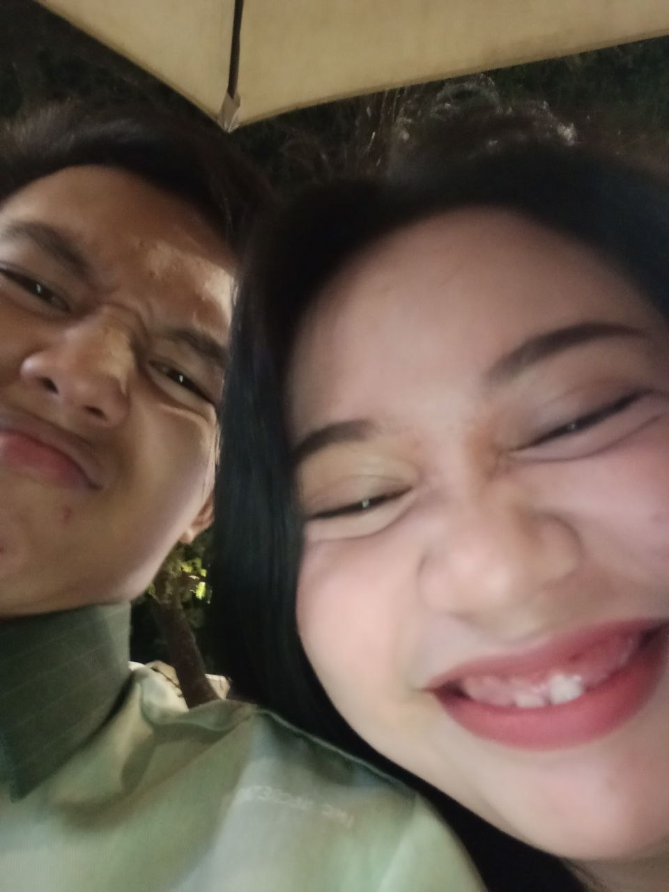
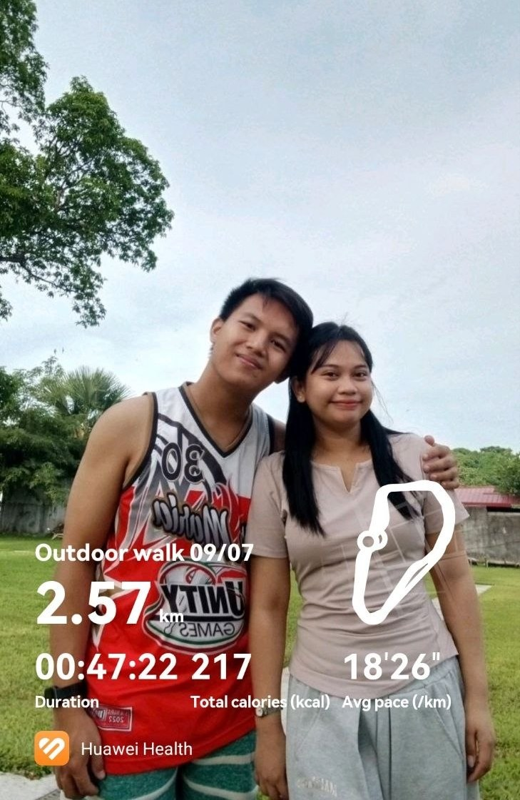
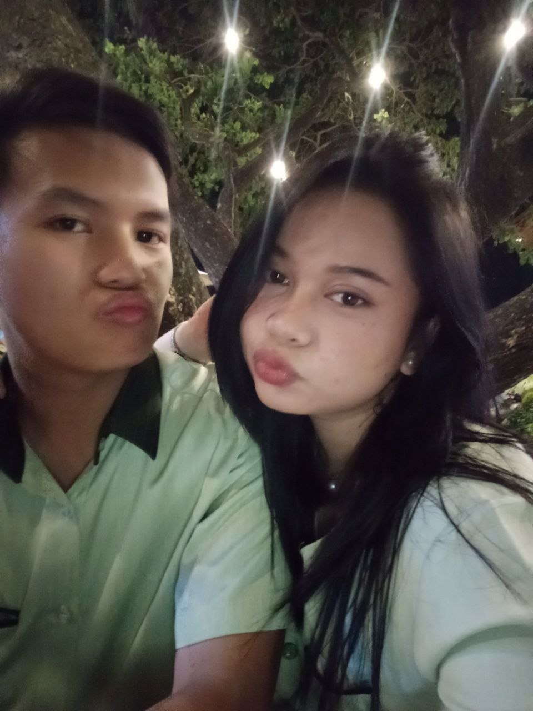
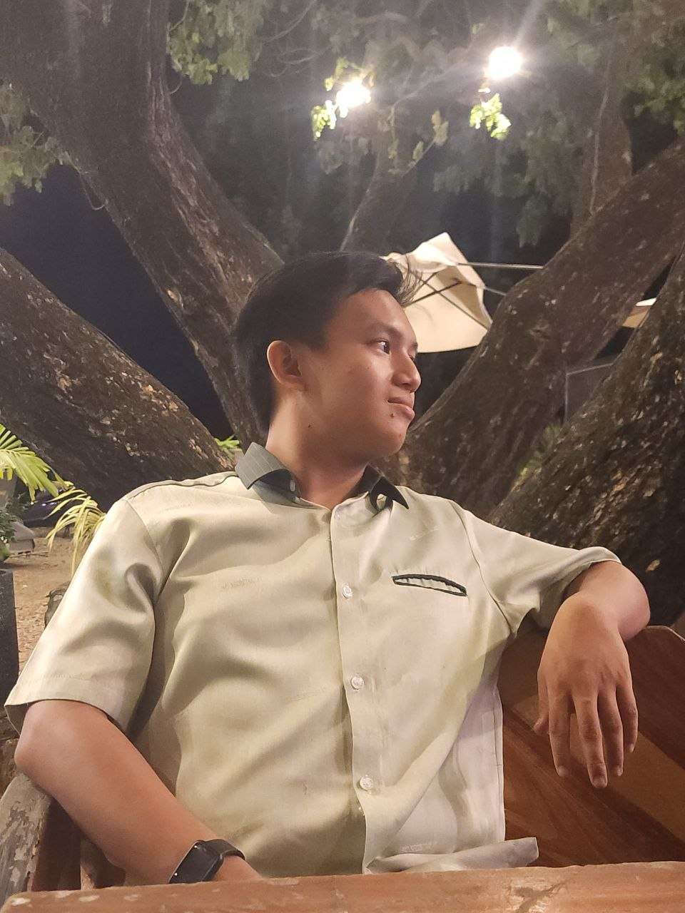
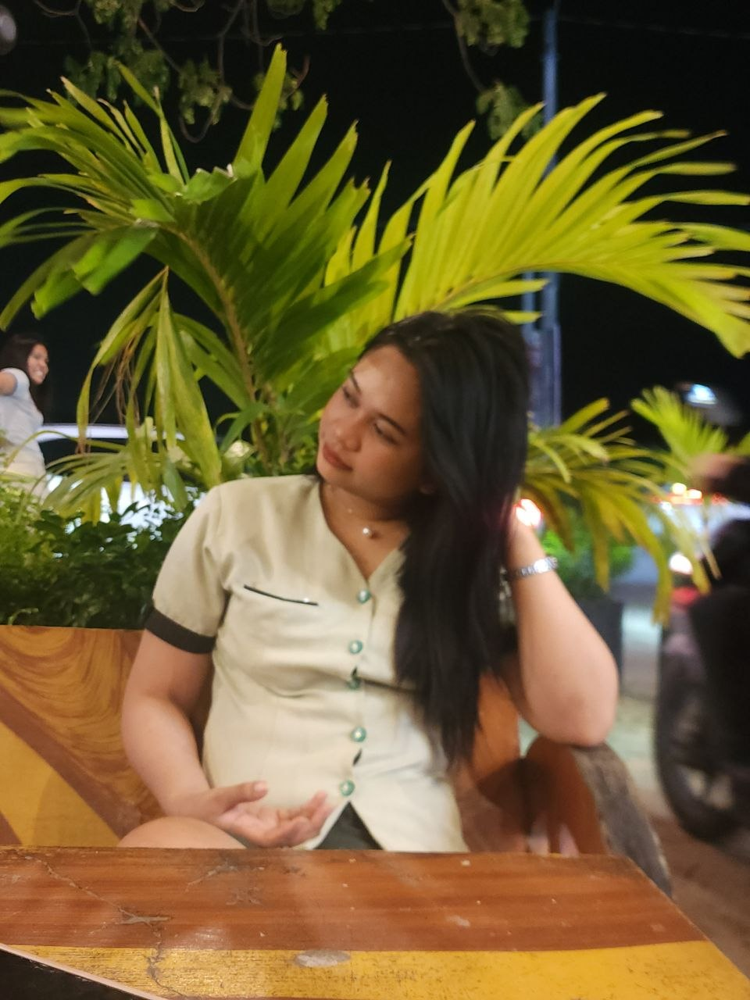

Some dates are filled with expensive plans. Others become unforgettable simply because of who you're with. July 9 wasn't about luxury. It was about spending time with the one you truly love—saving your time and money until the right moment, so you could spend them with the person who matters most.
We started our morning with a walk. For forty-seven minutes, we walked side by side, covering 2.57 kilometers together. No destination mattered. Every step was a reminder of how much you mean to me.





After our walk, we went back home where we shared pizza, pancit canton, and juice while playing Mobile Legends together. It wasn't a fancy meal. It wasn't a five-star restaurant. Yet somehow it felt perfect because I got to share it with you.
As the evening arrived, we went to church together at six o'clock. There was something peaceful about ending our day with gratitude before continuing our little adventure.
Later that night, we visited 24 Chicken near the Philippine Arena. While waiting for our food, we took pictures together. Sometimes the best memories happen while waiting rather than rushing.
When our order was finally ready, we brought everything back home where we ate together with my family. We talked, laughed, shared stories, and ended the night surrounded by warmth and happiness. It became one of those days that quietly reminds me how lucky I am to have you.
"The best dates aren't measured by where we go. They're measured by how every moment feels like home."
Thank you for making an ordinary Thursday become another headline worth writing. Here's to more walks, more late-night dinners, more photos, more adventures, and many more dates we'll someday look back on together.